I led the design, fabrication, and testing of the rear suspension system for our first competition vehicle. This project served as my mechanical engineering senior capstone, which focused on developing a high performance, regulation compliant rear suspension setup optimized for handling, durability and cost.


Project Context
Harvard had no prior Formula SAE presence. Recognizing the difficulty in garnering student involvement with no prior groundwork, the senior capstone project was identified as the igniter to starting up an FSAE team. Working alongside six other senior engineering students, I took charge of the rear suspension subsystem while others worked on the chassis, steering, powertrain, and aerodynamic package. Our goal was to create the infrastructure for a competition ready vehicle for Harvard's FSAE team in order to participate in FSAE's Internal Combustion Engine Division.
Suspension Type
After evaluating common suspension types (MacPherson strut, direct double wishbone, pullrod, pushrod), I selected a double wishbone pushrod configuration. This architecture allowed for:
- Inboard mounting of springs and dampers for better aerodynamics and protection
- Greater adjustability via rocker arms
- Simplified packaging above the drivetrain

Geometry Design
The suspension was designed around the Goodyear D2704 20.0x7.0-13 tire. Vehicle handling and tire grip is largely determined by camber angle, which is the angle between the vertical axis of the wheel and the vertical axis of the vehicle, when viewed from the front. I used a combination of CAD modeling and 4-bar linkage Matlab analysis to optimize camber behavior during bump, rebound, and body roll. Key geometry decisions included:
- Achieving a static camber of -1.25° for peak grip
- Ensuring camber angle did not become positive at any point in wheel travel, as tire grip significantly decreases past that point
- Selecting wheel halves and offsets to minimize scrub radius
- Optimizing camber gain with respect to control arm mounting points and rear bulkhead geometry via Matlab
The determination of the control arm mounting points and rear bulkhead geometry was nontrivial. As the system design was an ever changing process, with part compatibility and packaging being an uphill battle, the 4-bar linkage and subsequent camber gain would change. Thus, the camber gain would have to be retested and compared against my technical specification until the system design was completed. Collaboration with the chassis engineer was necessary as the final rear bulkhead geometry needed to be locked in for structural feasibility and torsional stiffness FEA testing.

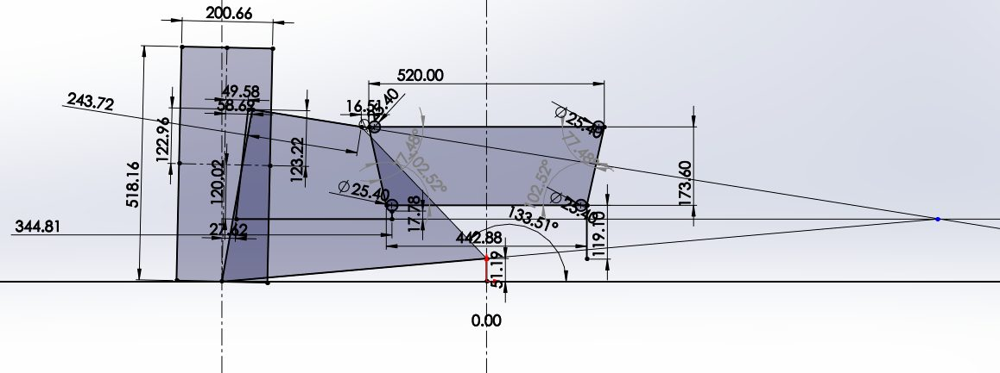

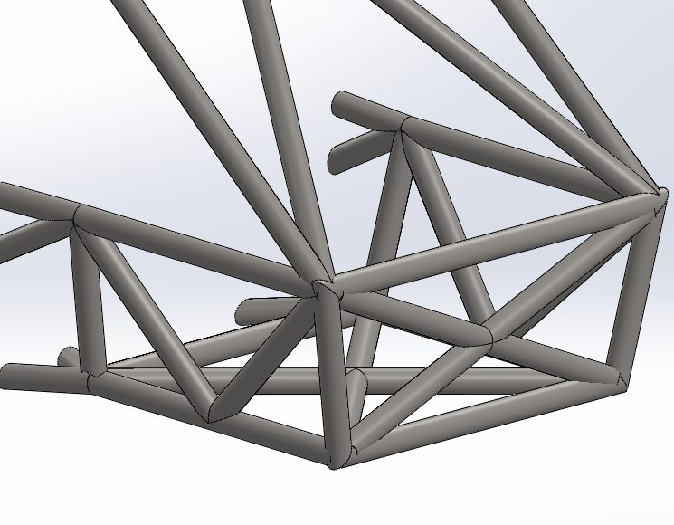
System Design & Machining
The rear suspension system contains several key components and subcomponents that were designed and fabricated as part of this thesis. This includes the following:
- Wheel Hub - The wheel hub must attach to the wheel face concentrically, hold the brake rotor, secure the inner ring of the ball bearings as well as house the mount for the differential
- Upright - The upright mounts the wheel hub, holds the brake caliper, secures the outer ring of the ball bearings, while also mounting both wishbones and the toe link
- Upper and Lower Wishbones - Suspension linkages that connect the chassis to the upright
- Pushrod - Suspension linkage that connects the lower wishbone to the rocker/damper subassembly
- Toe Link - Keeps the wheel at a fixed angle when looking at the vehicle from above

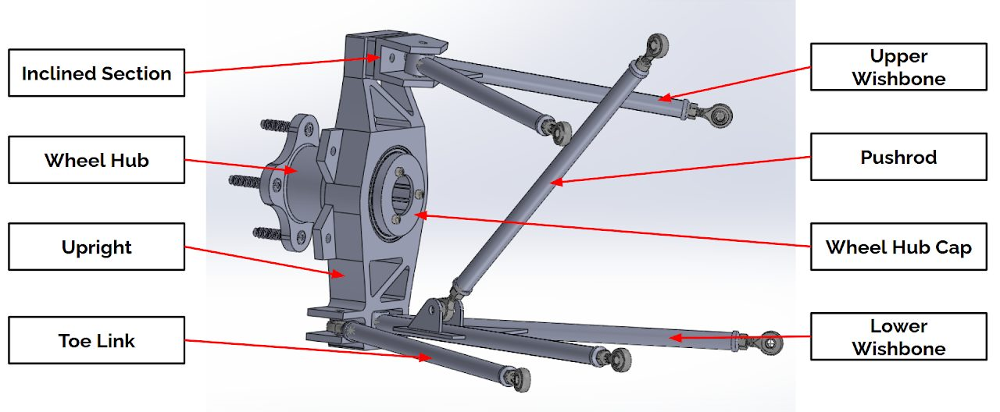

Wheel Hub
The wheel hub must allow rotation within the upright. Therefore, two ball bearings are utilized with the wheel hub securing the inner race and the upright securing the outer race. Thus, a stack configuration was designed with additional pieces pressing the bearings to the wheel hub.
Machined out of 7075 aluminum using manual lathe and manual mill, both with some programmed features

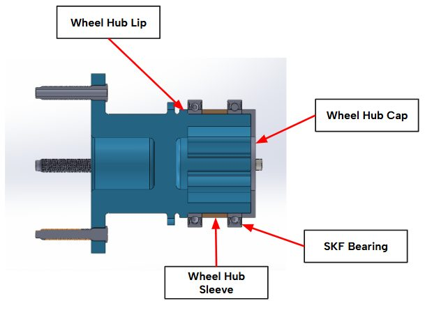

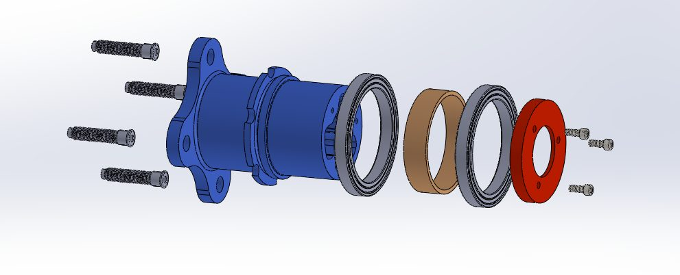
The hub must also secure the brake rotor and drivetrain axle, which uses a tripod mount. The wheel hub cap serves a second purpose to hold the tripod mount inside the wheel hub.

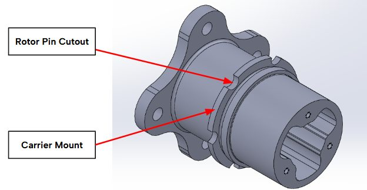

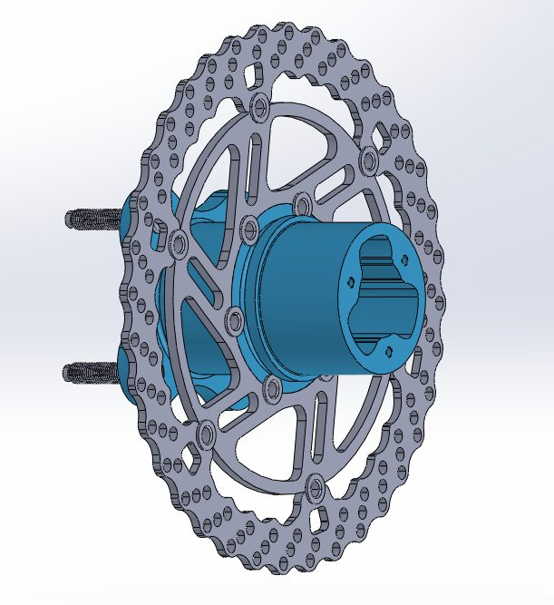

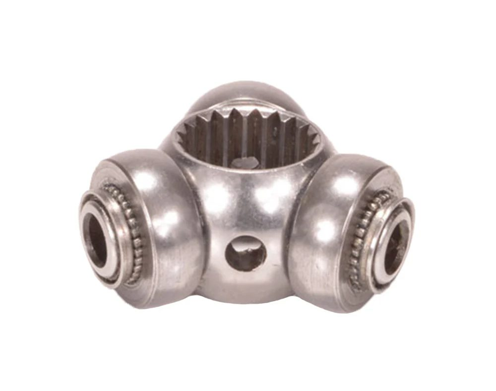


Upright
The upright must secure the wheel hub, this is through the aforementioned two ball bearings. An interference fit combined with a lip is designed to hold the outer race of both bearings.
The necessary mounts are designed to hold the brake calipers, control arms, pushrod and toe link in place.
Machined out of 6061 aluminum. The initial outline was waterjet cut and the rest was machined on the manual mill.

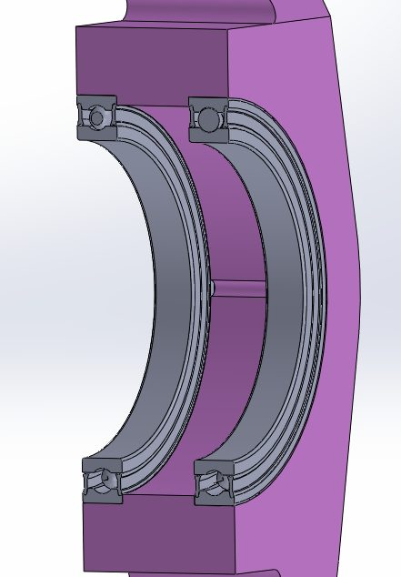

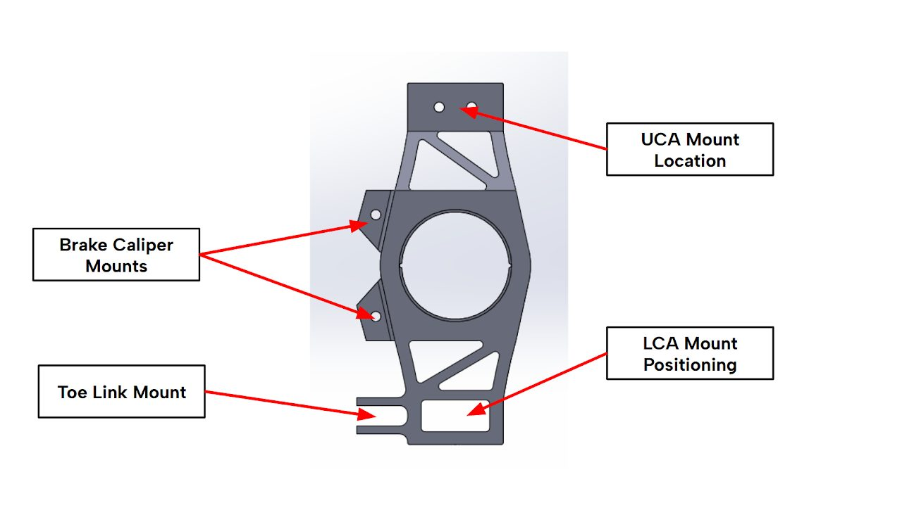

Control Arms

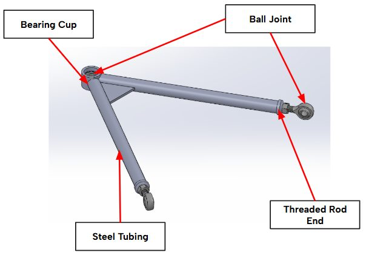
Linkages

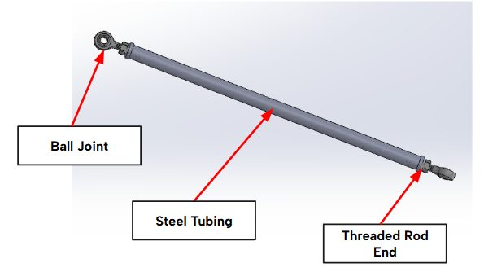


Threaded rod end inserts and bearing cups were machined on the manual lathe.
The steel tubing was notched and then fixtured in place in order to prevent them from warping while being TIG welded to the different end components.

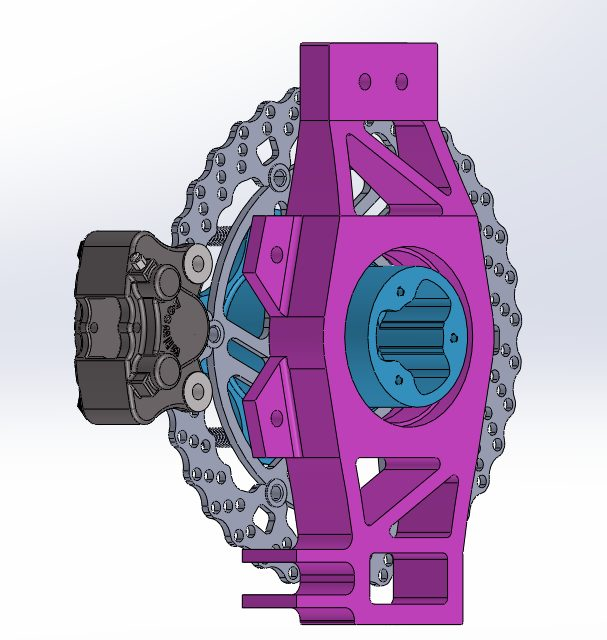

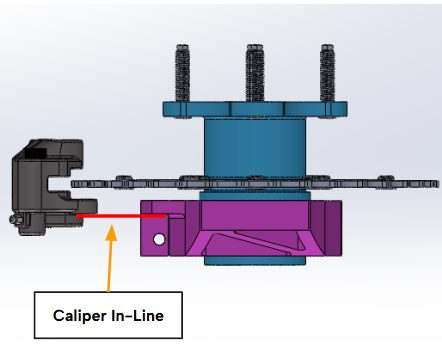

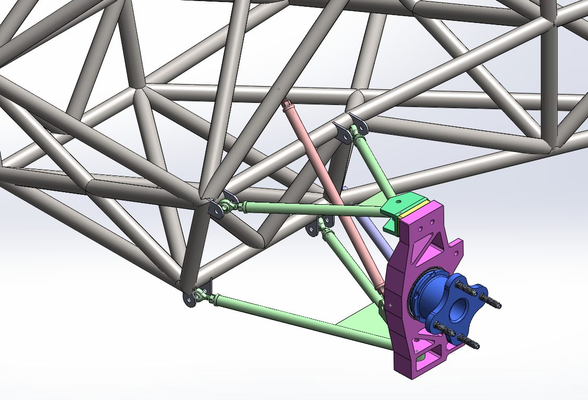

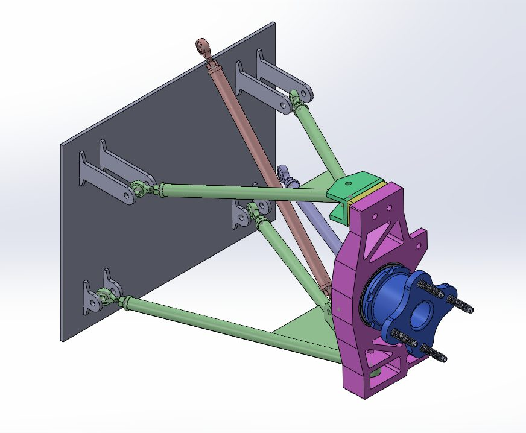

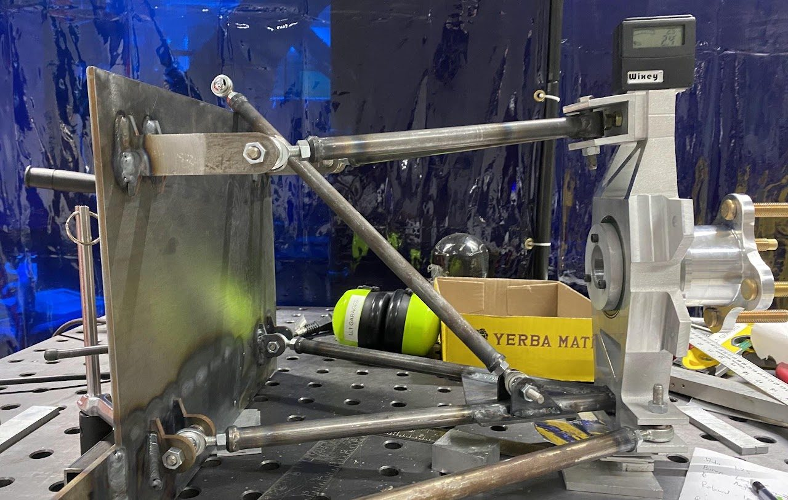

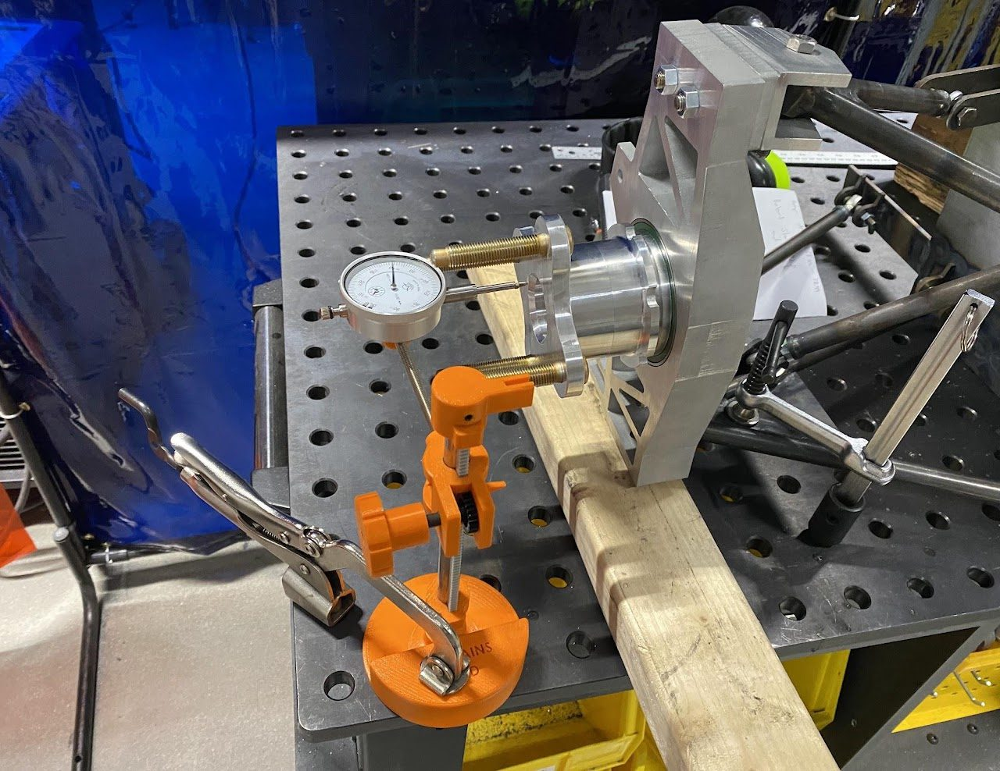